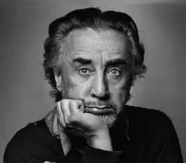

"Сумні клоуни" – так називається одна з книг Гарі. Повинно бути, таким був і він сам. Та це й про нього знаменитий епіграф Гессе до "Гри в бісер", це завдяки Гарі деякі, такі необхідні нам речі "трохи наближаються до можливості існувати і народжуватися…"
8 травня 1914 року народився Роман Кацев, він же – Ромен Гарі, він же – Еміль Ажар
8 травня 1914 року в Москві (за деякими даними – у Вільно) народилася людина-легенда, французький письменник російського походження, один з найблискучіших і загадкових письменників XX століття, єдиний двічі гонкуровский (вища літературна нагорода Франції) лауреат, військовий льотчик, учасник Опору, дипломат, кінорежисер Роман Кацев, більше відомий під своїми псевдонімами Ромен Гарі і Еміль Ажар. Він був напрочуд талановитим, його рідною мовою була російська, потім він перейшов на польську, більшість книг написав французькою, шість романів – англійською, а потім сам же перевів їх на французьку… Він ставив фільми за власними книгами, які потім заборонялися у Франції… Він був французьким дипломатом – співробітником посольств в Софії, Берні, Лондоні, генеральним консулом Франції в Лос-Анджелесі… Він був героєм Опору і другом де Голля… І він став автором однієї з найбільш грандіозних містифікацій XX століття, і він сам став міфом… "Людина без міфології людини – це завжди тухлятина. Ти не можеш демістифікувати людини, не потрапивши при цьому в ніщо, а ніщо – це завжди фашизм". Життя Ромена Гарі – це найпрекрасніша з його книг. З моменту народження його ім'я оточене легендами. Батьком Гарі, швидше за все, був знаменитий актор російського німого кіно, відомий підкорювач дамських сердець Іван Мозжухін. Мати Гарі, Ніна Борисовська, служила актрисою в московському Французькому театрі. В жилах національного героя Франції, кавалера ордена Почесного легіону, французького письменника з світовою славою не було ні краплі французької крові. Гарі говорив: "…дві речі з мого забутого російського дитинства дивним чином міцно засіли в моїй натурі у вигляді звичок. Я дуже люблю солоні огірки по-російськи, без оцту, і житній хліб з кмином… Роздобути в Москві пляшку справжнього бордо, напевно, значно легше, ніж розжитися в Парижі російськими солоними огірками, але мені доводиться робити це регулярно…" Ніна Борисовська, рятуючись від холоду, голоду, тифу та інших принад революції, бігла в 1921 році з сином з Радянської Росії. Сім з половиною років вони жили у Вільні, який тоді належав Польщі, потім переїхав до Варшави, потім – в Ніццу. Як майже всі емігранти з Росії, спочатку мати і син відчували значні труднощі. Після коледжу Гарі обрав професію військового льотчика. Коли Франція капітулювала, 26-річний Гарі опинився в лавах руху "Бореться Франція", яке очолював де Голь. Бився Гарі гідно, не раз ризикуючи життям і выпутываясь з неймовірних ситуацій, за свої бойові заслуги він отримав орден Почесного легіону і звання майора ВПС. Свій перший роман ("Європейське виховання") він написав у перервах між боями. Ось лише один випадок з військової біографії Гарі. 23 листопада 1943 року він в якості штурмана, разом з пілотом і стрільцем-радистом летить на бомбардувальнику "Бостон" бомбити німецькі заводи. Літак потрапляє в зону зенітного обстрілу. Гарі відчуває, що поранений в живіт. І тут в навушниках лунає холодний голос пілота Ланже: "Я поранений. Нічого не бачу. Я осліп". Кабіна пілота відокремлена сталевий перегородкою, проникнути туди неможливо… Льотчики приймають рішення летіти далі і бомбити мета, поранений Гарі передає ослепшему пілотові команди… Потім екіпаж повертає назад, у бік Англії. Над Англією вони хочуть вистрибнути з парашутом, але кабіну пілота заклинило… І тоді вони приймають рішення сідати (зрозуміло, що варіант вистрибнути, залишивши безпорадного пілота в літаку навіть не розглядається). Гарі продовжує передавати команди ослепшему пілотові, з третьої спроби вони садять літак. Це був перший випадок в історії французьких ВПС, коли сліпий пілот посадив літак за вказівками штурмана. Важкою трагедією в житті Гарі стала смерть його матері. Всю війну він отримував від неї листа, вірив, що вона жива… І лише повернувшись після перемоги Гарі дізнався, що мами давно нема, а всі листи, які вона написала заздалегідь, передчуваючи близьку смерть, і їх сусідка посилала, "щоб хлопчик спокійно воював і ні про що не думав". Історію своїх взаємин з матір'ю Гарі описав в одній з кращих своїх книг – "Обіцянка на світанку". Ця книга стала гімном синівської любові… "Знаєш, матерям ніколи не віддають по заслугах. Моя, принаймні, отримала право на книгу…" Щодо походження свого псевдоніма Гарі говорив, що це наказовий спосіб російського дієслова горіти, просто ім'я Роман трансформувалося у французьке Ромен, а "горі" перетворилося в Гару. Першою дружиною Гарі була англійська письменниця Леслі Бланч. Коли вони розлучалися, Гарі присвятив їй книгу "Леді Л", написану по-англійськи. Характер героїні був явно списаний з Леслі. Але його головною і найбільш трагічним коханням була американська актриса Джин Сіберг (багато хто пам'ятає її головної жіночої ролі у фільмі Годара "На останньому диханні"). У момент знайомства Джин було 21 рік, а Гарі 45. Вони одружилися, у них народився син. Через кілька років вони розлучилися… 1979, так і не оговтавшись після трагічної загибелі доньки, з приводу батьківства якої в пресі розпускалися брудні чутки, Джин покінчила з собою (такою є офіційна версія, сам Гарі вважав, що її вбили). Гарі практично припинив писати і через рік вистрілив собі в голову… Джин вгадується у багатьох героїнь Гарі, американці з "Пожирачів зірок", у героїні чудового оповідання "Птахи прилітають вмирати в Перу" (ця розповідь був визнаний кращим розповіддю 1964 року). За нього Гарі поставив свій фільм, де головну роль зіграла Джин. Цей фільм був заборонений у Франції за абсурдним звинуваченням у порнографії… Гарі ненавидів тоталітарні режими, особливо після того, як у Болгарії був страчений його друг Петков, лідер демократичного крила компартії, але так і не приєднався до жодної з політичних партій. "Я охоче б прийняв чию-небудь сторону, – якось сказав він, — але з усіх сторін сильно смердить". Гарі все життя був неймовірним романтиком і авантюристом. Навіть будучи "солідним" дипломатом, Гарі здійснював вчинки, які шокували його колег. Так, одного разу, перебуваючи в якості радника французького посольства в Берні, він несподівано стрибнув у зоопарку в рів до ведмедів і сидів там, поки не приїхала пожежна машина. Ведмеді його не чіпали. "А чого від них чекати? Це ж швейцарські ведмеді. Вони такі ж нудні, як все в цьому місті…" Близьке знайомство з ООН, де він представляв Францію, розчарувало Гарі. Інтриги, брехня, фальш і лукавість політиків… Гарі злий написав сатиричний роман "Людина з голубкою" і видав її під псевдонімом Фоско Синибальди. Найбільші політичні діячі того часу вгадувалися в персонажах. Це був дуже сміливий поступок і спочатку Гарі всіляко відхрещувався від авторства. Коли Гарі був генеральним консулом в Болівії, він отримав звістку, що його роману "Коріння неба" присуджена Гонкурівська премія. Це було у 1956 році. По суті, "Коріння неба" – перший "екологічний" роман, хоча сюжет його і будується як детектив. Гарі вважав, що винищення тварин – буденний фашизм, а він усе своє життя боровся з фашизмом. В середині 70х років критики раптом відвернулися від Гару, "модні" журнали почали мусувати чутки про те, що він "списався". Спочатку Гарі не збирався починати ту грандіозну містифікацію, яка пізніше потрясла весь літературний світ. Він написав книгу "Голубчик" і в останній момент вирішив випустити її під новим псевдонімом – Еміль Ажар. У книги був величезний успіх, а Гарі вирішив зберегти таємницю, до того ж він завжди любив розіграші та містифікації. І він продовжував писати під двома псевдонімами. Ажара вважали молодим автором (пізніше Гарі видав за нього свого племінника), маститі французькі критики хвалили Ажара і лаяли Гарі, їх навіть протиставляли один одному, порівнювали їх стиль… А Гарі насолоджувався… Перша ж книга Ажара була висунута на престижну літературну премію Ренодо. Через адвоката видавництво, що випустило її, уклало з молодим автором контракт на п'ять книг. І на наступний рік Ажар випустив новий роман "все життя попереду". Дія книги відбувається в паризькому кварталі Бельвіль. Стара, що вийшла в тираж повія, польська єврейка мадам Роза, що пройшла гітлерівський концтабір, займається тим, що дає притулок дітям повій. Серед її вихованців – арабський хлопчик Мохамед (Мо-Мо). Відносини старої єврейки і арабського хлопчика стали сюжетом цього безумовного шедевра. Книга написана від імені маленького араба. "Все життя попереду" була висунута на Гонкурівську премію і одноголосно її отримала (за положенням ця премія може присуджуватися людині лише один раз, таким чином Гарі став єдиним в історії володарем двох вищих літературних нагород Франції). По книзі одразу ж був знятий фільм з С. Синьйорі в головній ролі, Синьйорі отримала премію "Сезар" за цю роль. Загальні захоплення провокували різноманітні чутки, один з яких приводив сам Гарі: "Я розмовляв з однією жінкою, у якої була любовна зв'язок з Ажаром. За її словами, він прекрасний у ліжку… Я радий, що не розчарував її…" Гарі продовжував зберігати таємницю і всі подробиці цієї містифікації стали відомі лише після його смерті, коли знайшли його есе "Життя і смерть Еміля Ажара". 2 грудня 1980 року в будинку № 108 на рю дю Бак на другому поверсі Гарі вистрілив собі в голову… Кажуть, що навіть тут він проявив притаманну йому делікатність – щоб не шокувати нікого неприємним видовищем, він дочекався, коли залишиться один, одягнув червону купальну шапочку і вистрілив собі в рот. Він помер одразу, не було ні передсмертних конвульсій, ні разбрызганных мізків… Похорон Гарі проходили у військовій церкві Будинку Інвалідів, де проводжають в останню путь найвизначніших полководців Франції, і де знаходиться гробниця Наполеона. Були присутні всі сподвижники де Голля, відомі воєначальники, письменники, політики… Священик відмовився проводити месу – покійний був самогубцем і не сповідував жодної релігії.